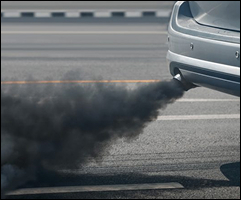

Fum negru?
Ai observat că mașina ta scoate fum negru pe țeava de eșapament? Aceasta nu este doar o problemă de imagine, ci un semn clar că motorul nu funcționează corect...
Vezi articol
Masina porneste greu?
Pornirea greoaie a mașinii este o problemă comună, mai ales în sezonul rece sau la mașinile mai vechi. Dacă observi că motorul se chinuie să pornească...
Vezi articolPractici de condus
Condusul în orașe aglomerate este o provocare zilnică pentru mulți șoferi. Blocaje, semafoare, pietoni grăbiți, claxoane și nervi întinși la maximum – toate fac...
Vezi articol